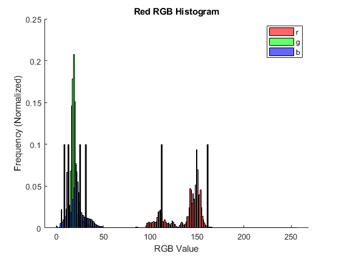
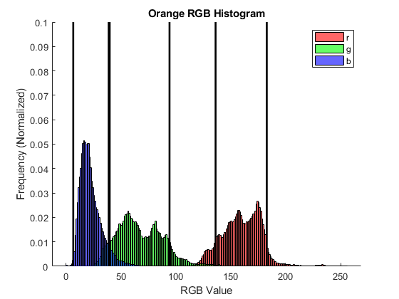
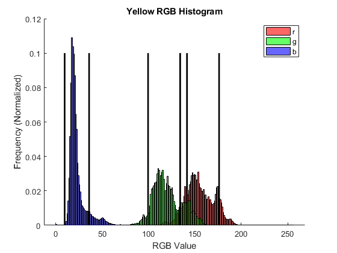
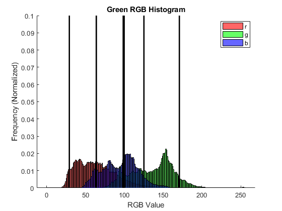
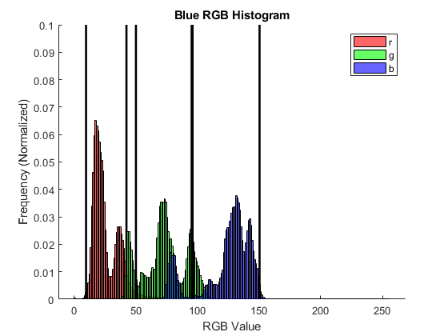
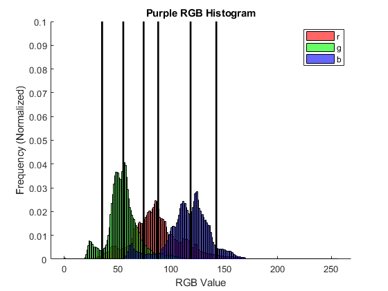
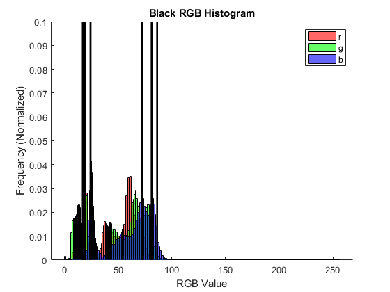
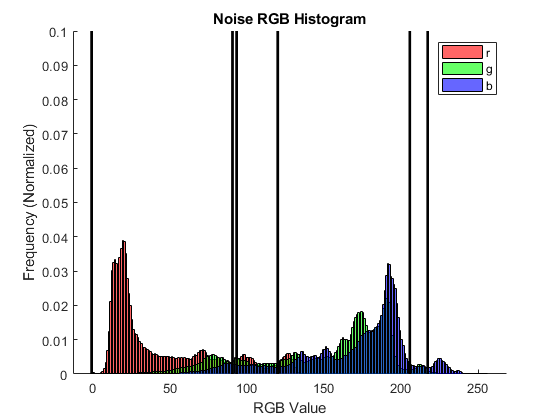
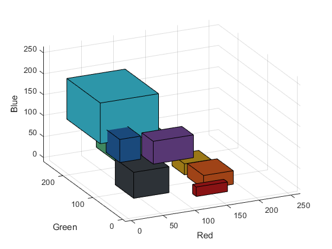
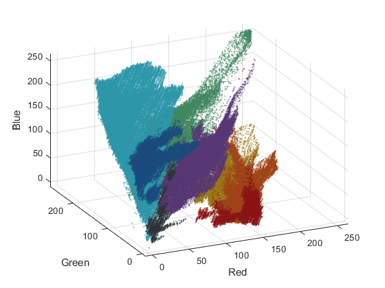

clear
close all;
clc
color = ["Red" "Orange" "Yellow" "Green" "Blue" "Purple" "Black" "Noise"];
mult = 1.3;
fprintf('Results from Analysis with +/- %.2f SD\n',mult);
fprintf('______________________________________________________\n');
fprintf('Color\tR_low\tR_high\tG_low\tG_high\tB_low\tB_high\n');
for i = 1:length(color)
clear R_Total G_Total B_Total
R_Total = zeros(1,256);
G_Total = zeros(1,256);
B_Total = zeros(1,256);
for j = 1:5
chr = convertStringsToChars(color(i));
str = strcat(chr,int2str(j),'.jpg');
Data = imread(str);
R = Data(:,:,1);
G = Data(:,:,2);
B = Data(:,:,3);
line = [0 0.1];
R_Total = [R_Total R(:)'];
G_Total = [G_Total G(:)'];
B_Total = [B_Total B(:)'];
end
r_mean = mean(R_Total);
g_mean = mean(G_Total);
b_mean = mean(B_Total);
r_sd = std2(R_Total);
g_sd = std2(G_Total);
b_sd = std2(B_Total);
r_high = r_mean + mult*r_sd;
r_low = r_mean - mult*r_sd;
g_high = g_mean + mult*g_sd;
g_low = g_mean - mult*g_sd;
b_high = b_mean + mult*b_sd;
b_low = b_mean - mult*b_sd;
fprintf('%s \t%.2f\t%.2f\t%.2f\t%.2f\t%.2f\t%.2f\n',color(i),r_low,r_high,g_low,g_high,b_low,b_high);
figure(i);
hold on;
histogram(R_Total,0:1:256,'FaceColor','r','Normalization','probability');
histogram(G_Total,0:1:256,'FaceColor','g','Normalization','probability');
histogram(B_Total,0:1:256,'FaceColor','b','Normalization','probability');
plot(r_low*ones(2,1),line,'color','k','linewidth',2);
plot(r_high*ones(2,1),line,'color','k','linewidth',2);
plot(g_low*ones(2,1),line,'color','k','linewidth',2);
plot(g_high*ones(2,1),line,'color','k','linewidth',2);
plot(b_low*ones(2,1),line,'color','k','linewidth',2);
plot(b_high*ones(2,1),line,'color','k','linewidth',2);
tit = strcat(color(i),' RGB Histogram');
title(tit);
xlabel('RGB Value');
ylabel('Frequency (Normalized)');
legend('r','g','b');
x = [r_low r_high r_high r_low r_low; r_low r_high r_high r_low r_low];
y = [g_low g_low g_high g_high g_low; g_low g_low g_high g_high g_low];
z = [b_low*ones(1,size(x,2)); b_high*ones(1,size(x,2))];
r_trip = r_mean/255;
g_trip = g_mean/255;
b_trip = b_mean/255;
trip = [r_trip g_trip b_trip];
figure(length(color)+1);
Temp = surf(x, y, z, 'FaceColor', trip);
hold on
grid on
patch(x', y', z', trip)
xlabel('Red');
ylabel('Green');
zlabel('Blue');
axis([-10 265 -10 265 -10 265]);
view(-25, 30)
figure(length(color)+2);
hold on
grid on
plot3(R_Total, G_Total, B_Total, '.', 'Color', trip, 'MarkerSize', 2);
xlabel('Red');
ylabel('Green');
zlabel('Blue');
axis([-10 265 -10 265 -10 265]);
view(-25, 30)
end
Results from Analysis with +/- 1.30 SD
______________________________________________________
Color R_low R_high G_low G_high B_low B_high
Red 112.15 161.09 12.77 25.21 8.50 31.32
Orange 136.16 182.80 39.73 94.25 6.52 38.81
Yellow 134.08 176.05 99.51 141.46 9.55 35.89
Green 29.18 98.64 99.78 170.94 63.92 125.29
Blue 9.62 42.41 50.09 95.98 95.27 150.34
Purple 55.32 118.33 35.47 74.37 87.97 142.41
Black 16.97 72.27 18.96 81.11 24.20 86.29
Noise -0.72 90.71 93.36 205.75 120.05 217.33
         